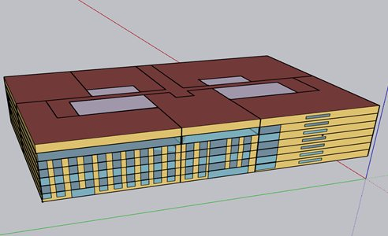
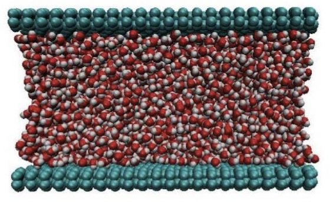

Thermofluidics and Nanotechnology for Sustainable Energy Systems Laboratory
We are a research group in the School of Energy Science and Engineering at the Indian Institute of Technology Kharagpur. Our work sits at the interface of nanofluidics and microfluidics: graphene-based desalination, streaming potential, nanofluidic channel fabrication, multiphase microfluidics, droplet dynamics, electrokinetics and the energy performance of buildings.
From molecules to systems
Molecular dynamics of water, ions and polymers in nanoconfinement: slip, wettability and transport below a micron.
Experiments and simulations of electric double layers, droplets and multiphase flow in micro- and millichannels.
Solar thermal, wind and building energy systems, increasingly guided by machine learning.
What we study

2D Materials and Nanoconfinement
Engineering solid–liquid interfaces at the nanoscale: wettability, slip and transport in graphene and carbon nanochannels.

Nanofluid Heat Transfer
Nanoparticle suspensions, porous media and engineered heat sinks for better thermal management.
Fluid–Structure Interaction
Coupled dynamics of deformable structures and the fluids around them, from flexible conduits to bio-inspired flows.

Energy Studies of Buildings
Passive cooling, phase-change materials, façades and green roofs for energy-efficient buildings.

Interfacial Phenomena and Multiphase Microfluidics
Immiscible phases in small channels: plugs, jets, mixing and core–annular flow.

Droplet Dynamics
Formation, impact, wetting and propulsion of droplets on engineered surfaces.

Electrokinetics
Electric fields, ions and flow at the micro- and nanoscale: streaming potential, energy conversion and translocation.
All publications
Search and filter every paper by theme, type and year.
Selected work
Experiments and test beds


Dr. Chirodeep Bakli
My research focuses on multiscale fluid flow and heat transfer with the twin objectives to understand the interfacial interactions and flow physics, and to use them to develop smart surfaces and for renewable energy generation.
News
- Two PhD theses defended: Vinay Arya and Shashi Rastogi.
- PhD theses defended by Aniruddha Guha, Avinash Kumar and Nilanjan Mondal.
- Sambit Kumar Behera, an M.Tech student of the lab, received the Reliance Foundation scholarship.
- Indo-UK Capacity Building Symposium: Sustainable Energy Transition — Engineering, Entrepreneurship and Wellbeing
Organised by IIT Kharagpur and the University of Birmingham, for faculty, research scholars and PG/UG students from engineering, science, management and law.
Recent journal papers
- 2-D Numerical Investigation of horizontal core annular flow - Performance, Insights and ChallengesEkta Tayal, Joydip Chaudhuri, Chirodeep Bakli, Subhabrata Ray, Gargi DasJOURNAL OF INDUSTRIAL AND ENGINEERING CHEMISTRY, 160, 872-884, 2026
- Aggregation dynamics of molybdenum-based precursors in rarefied carrier gas mixtures under sub-nucleation conditionsNilanjan Mondal, Saurish Das, Sourav Mondal, Chirodeep BakliThe Journal of Chemical Physics, 164 (22), 224310, 2026
- All-climate high-voltage MnO2 pseudocapacitor enabled by a molecularly crowded water-in-salt electrolytePrahlada Thippeswamy, Vinay Arya, Indranil Dey, Chirodeep Bakli, Debasis GhoshJournal of Materials Chemistry A, 14 (41), 27642-27658, 2026
- Atomistic calculations of the precursor molecular diffusivity at rarefaction: Understanding gas transport in semiconductor fabrication linesRamisetti Lalitha, Neha Kumari, Saurish Das, Keerthi Gowdaru, Nilanajan Mondal, Chirodeep Bakli, Sourav MondalResults in Engineering, 31, 111534, 2026
- Cover Feature: Dual‐Function Hydrogel Synthesis for Passive Photovoltaic Cooling for Climate‐Resilient Solar Infrastructure (Sol. RRL 6/2026)Vinay Arya, Vikash Chandra, Anirban Roy, Chirodeep BakliSolar RRL, 10 (6), e70337, 2026